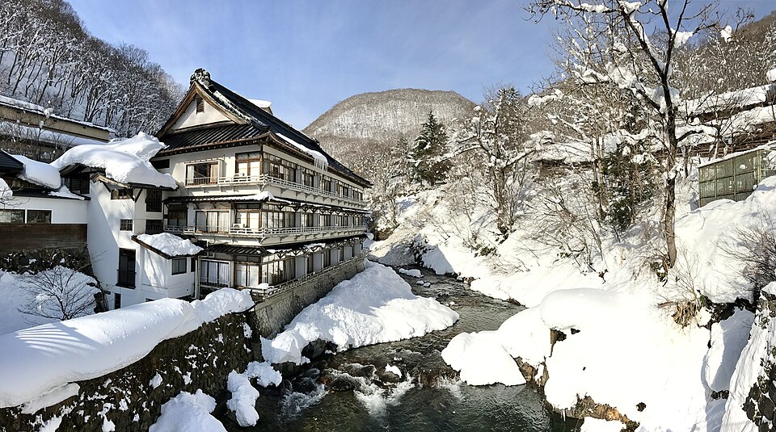

결제 방법 안내
온천 한눈에는 결제를 받지 않습니다. 시설 공식 사이트나 예약처로 이동해 예약하고 결제합니다.
- 사전 카드 결제와 현장 결제 가능 여부는 예약처와 상품마다 다릅니다.
- 결제 시점과 취소 조건은 예약 직전 화면에서 다시 확인합니다.
- 당일 입욕은 현장에서 엔화 현금으로 내는 곳이 많습니다.
- 화면의 원화 금액은 그날 고시 환율로 환산한 참고 값입니다. 실제 결제 금액은 카드사와 환전 시점에 따라 달라집니다.

온천 한눈에는 결제를 받지 않습니다. 시설 공식 사이트나 예약처로 이동해 예약하고 결제합니다.